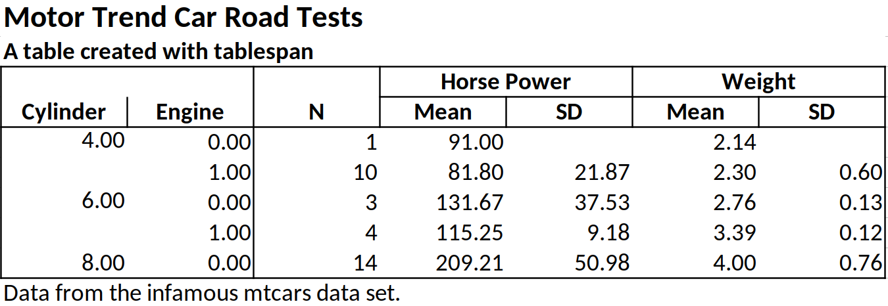
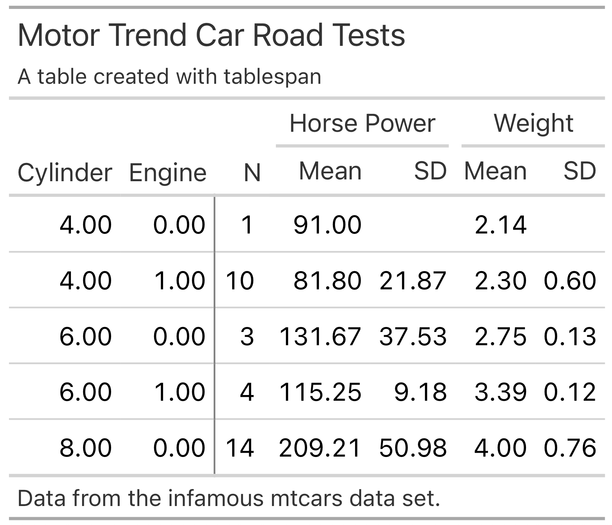
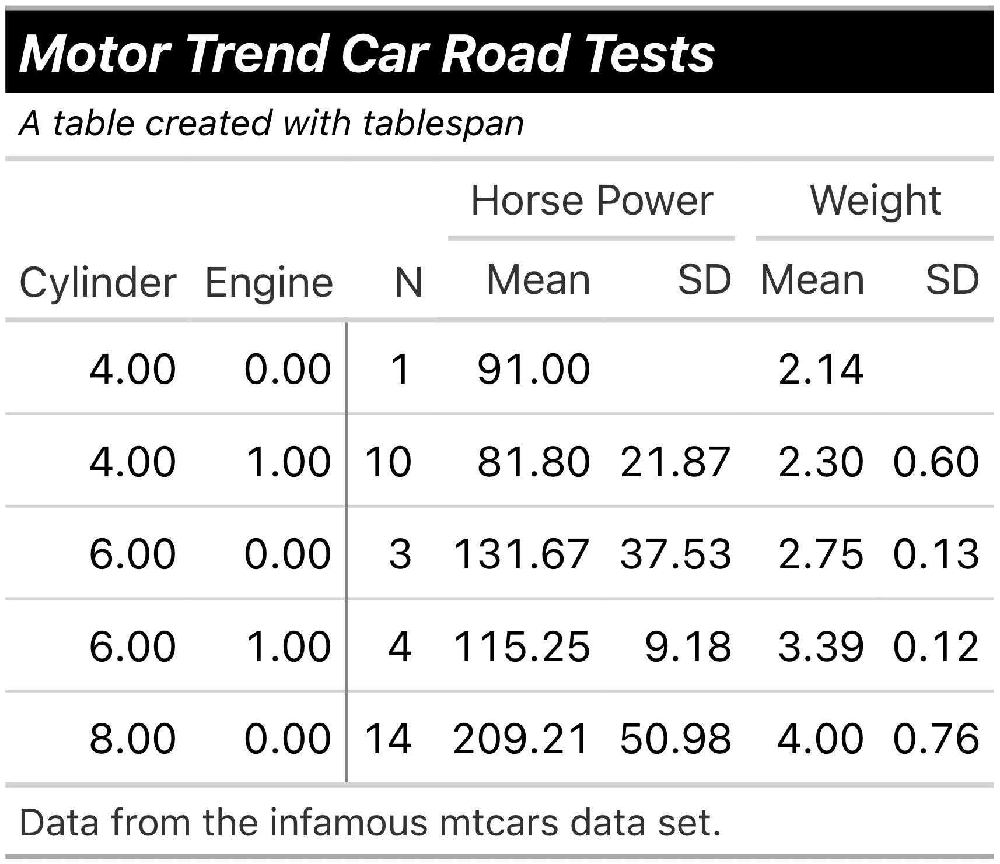
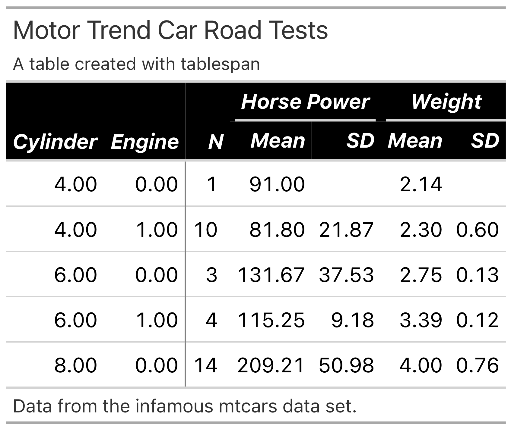
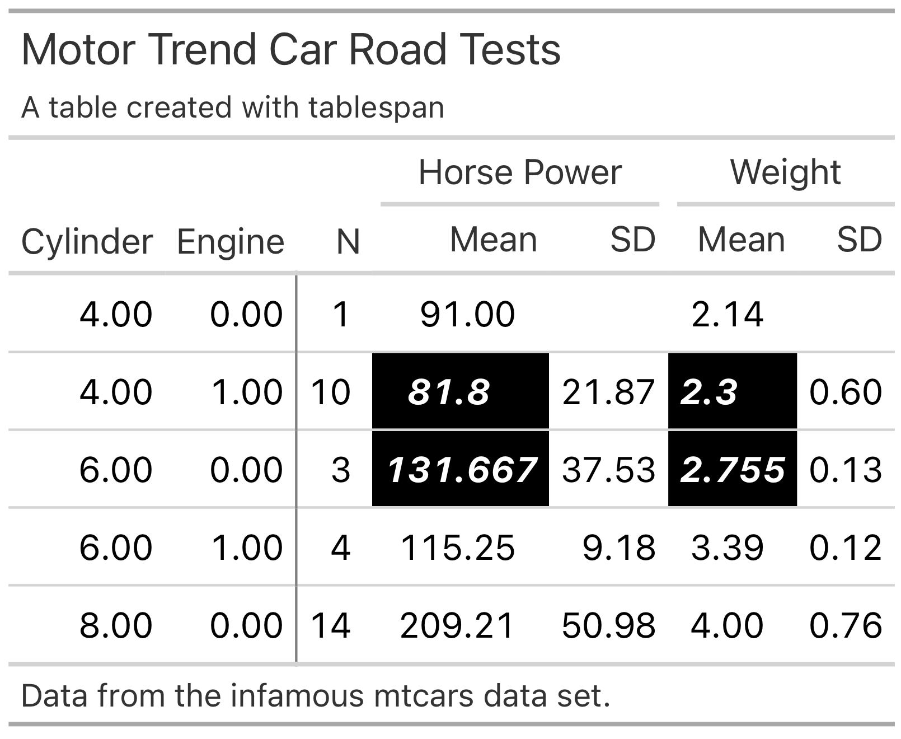
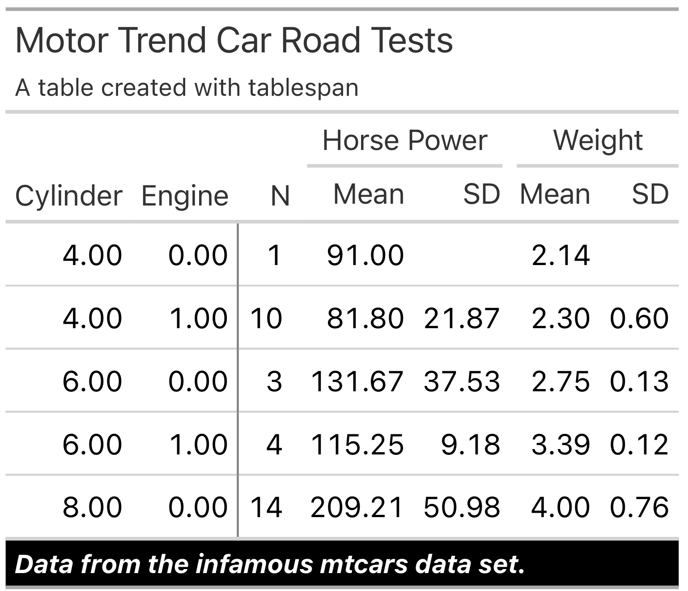
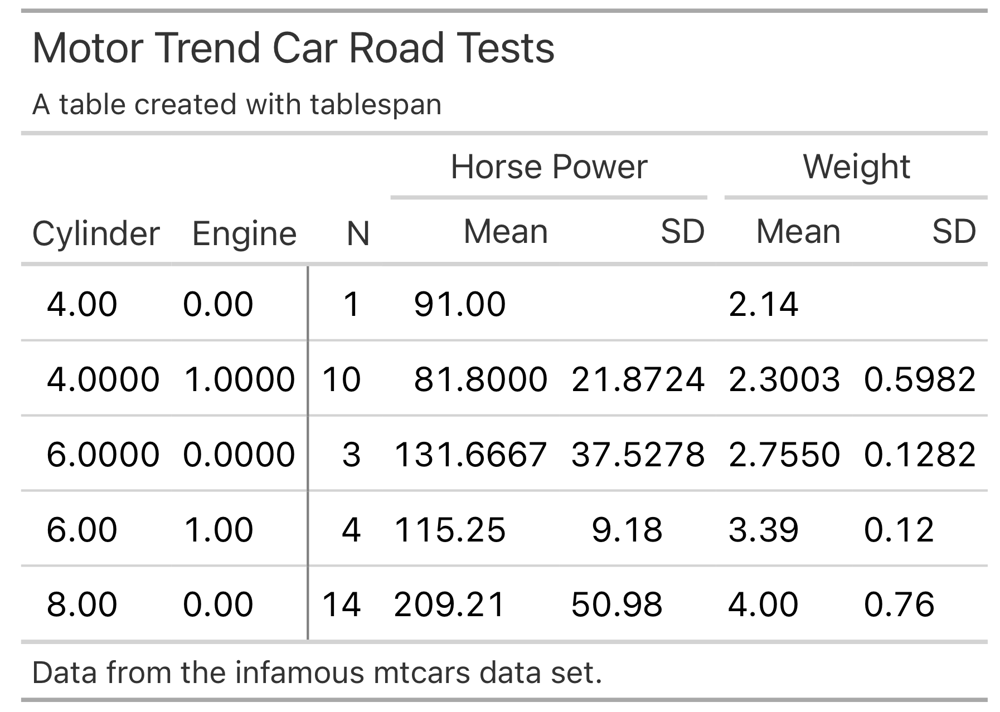
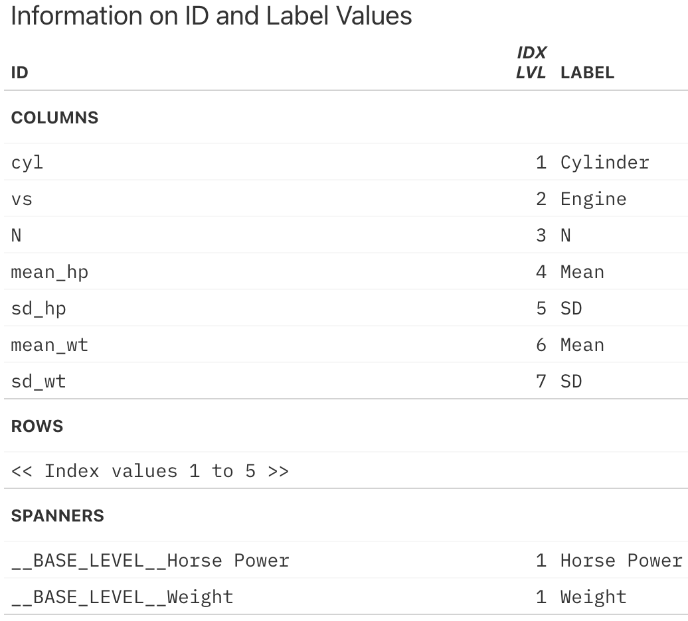

Create satisficing tables in R the formula way.
The core objective of tablespan is to:
- provide a “good enough” approach to easily create tables by leveraging R’s formulas.
- provide direct exports to other, more flexible table packages such as
gt,flextable, andhuxtable.
The following shows an example, where we define a relatively complex table header setup with a single formula. The details of the syntax will be explained below.
library(dplyr)
library(tablespan)
data("mtcars")
summarized_table <- mtcars |>
group_by(cyl, vs) |>
summarise(N = n(),
mean_hp = mean(hp),
sd_hp = sd(hp),
mean_wt = mean(wt),
sd_wt = sd(wt))
#> `summarise()` has grouped output by 'cyl'. You can override using the `.groups`
#> argument.
tbl <- tablespan(data = summarized_table,
formula = Cylinder:cyl + Engine:vs ~
N +
(`Horse Power` = Mean:mean_hp + SD:sd_hp) +
(`Weight` = Mean:mean_wt + SD:sd_wt),
title = "Motor Trend Car Road Tests",
subtitle = "A table created with tablespan",
footnote = "Data from the infamous mtcars data set.")
tbl |>
print(use_hux = FALSE)
#> Motor Trend Car Road Tests
#> A table created with tablespan
#>
#> | | Horse Power Weight |
#> | Cylinder Engine | N Mean SD Mean SD |
#> | -------- ------ - -- ----------- ----- ------ ---- |
#> | 4 0 | 1 91 2.14 |
#> | 4 1 | 10 81.8 21.87 2.3 0.6 |
#> | 6 0 | 3 131.67 37.53 2.76 0.13 |
#> | ... ... | ... ... ... ... ... |
#> Data from the infamous mtcars data set.This basic table can now be easily exported to other table formats.
R Packages for Table Conversion and Export
tablespan builds on the awesome packages gt, openxlsx , flextable, and huxtable. This allows tablespan tables to be exported to a large number of formats:
| Package | Conversion Function | Description | Export Formats |
|---|---|---|---|
| gt | as_gt() |
The gt package (Great Tables) provides a grammar for creating publication-ready tables with fine-grained control over styling, formatting, and layout. | HTML, PDF, PNG, LaTeX, RTF, Word (docs) |
| openxlsx | as_excel() |
The openxlsx package offers Excel file creation and manipulation. Great for reporting tables to end-users. | Excel (docs) |
| flextable | as_flextable() |
flextable specializes in creating complex, publication-quality tables with extensive formatting capabilities. Integrates well with Word/PowerPoint workflows. | HTML, Word, RTF, PowerPoint, PDF, PNG (docs) |
| huxtable | as_huxtable() |
huxtable provides a unified interface for creating tables in multiple output formats. Also provides styled printing to the console. | LaTeX, Typst, HTML, Word, Excel, RTF, markdown, console (docs) |
Installation
To install tablespan from CRAN use:
install.packages("tablespan")The development version of tablespan can be installed from GitHub with:
Introduction
R has a large set of great packages that allow you to create and export tables that look exactly like you envisioned. However, sometimes you may just need a good-enough table that is easy to create and share with others. This is where tablespan can be of help.
Let’s assume that we want to share the following table:
library(dplyr)
data("mtcars")
summarized_table <- mtcars |>
group_by(cyl, vs) |>
summarise(N = n(),
mean_hp = mean(hp),
sd_hp = sd(hp),
mean_wt = mean(wt),
sd_wt = sd(wt))
#> `summarise()` has grouped output by 'cyl'. You can override using the `.groups`
#> argument.
print(summarized_table, use_hux = FALSE)
#> # A tibble: 5 × 7
#> # Groups: cyl [3]
#> cyl vs N mean_hp sd_hp mean_wt sd_wt
#> <dbl> <dbl> <int> <dbl> <dbl> <dbl> <dbl>
#> 1 4 0 1 91 NA 2.14 NA
#> 2 4 1 10 81.8 21.9 2.30 0.598
#> 3 6 0 3 132. 37.5 2.76 0.128
#> 4 6 1 4 115. 9.18 3.39 0.116
#> 5 8 0 14 209. 51.0 4.00 0.759We don’t want to share the table as is - the variable names are all a bit technical and the table could need some spanners summarizing columns. So, we want to share a table that looks something like this:
| | Horse Power | Weight |
| Cylinder | Engine | Mean | SD | Mean | SD |
| -------- | ------ | ----- | --- | ---- | -- |
| | |tablespan allows us to create this table with a single formula.
Creating a Basic Table
In tablespan, the table headers are defined with a formula. For example, cyl ~ mean_hp + sd_hp defines a table with cyl as the row names and mean_hp and sd_hp as columns:
library(tablespan)
tablespan(data = summarized_table,
formula = cyl ~ mean_hp + sd_hp) |>
print(use_hux = FALSE)
#>
#> | cyl | mean_hp sd_hp |
#> | --- - ------- ----- |
#> | 4 | 91 |
#> | 4 | 81.8 21.87 |
#> | 6 | 131.67 37.53 |
#> | ... | ... ... |Note that the row names (cyl) are in a separate block to the left.
Adding Spanners
Spanners are defined using braces and spanner names. For example, the following defines a spanner for mean_hp and sd_hp with the name Horsepower: cyl ~ (Horsepower = mean_hp + sd_hp):
tablespan(data = summarized_table,
formula = cyl ~ (Horsepower = mean_hp + sd_hp)) |>
print(use_hux = FALSE)
#>
#> | | Horsepower |
#> | cyl | mean_hp sd_hp |
#> | --- - ---------- ----- |
#> | 4 | 91 |
#> | 4 | 81.8 21.87 |
#> | 6 | 131.67 37.53 |
#> | ... | ... ... |Spanners can also be nested:
tablespan(data = summarized_table,
formula = cyl ~ (Horsepower = (Mean = mean_hp) + (SD = sd_hp))) |>
print(use_hux = FALSE)
#>
#> | | Horsepower |
#> | | Mean SD |
#> | cyl | mean_hp sd_hp |
#> | --- - ---------- ----- |
#> | 4 | 91 |
#> | 4 | 81.8 21.87 |
#> | 6 | 131.67 37.53 |
#> | ... | ... ... |Renaming Columns
Variable names in an R data.frame are often very technical (e.g., mean_hp and sd_hp). When sharing the table, we may want to replace those names. In the example above, we may want to replace mean_hp and sd_hp with “Mean” and “SD”. In tablespan renaming variables is achieved with new_name:old_name. For example, cyl ~ (Horsepower = Mean:mean_hp + SD:sd_hp) renames mean_hp to Mean and sd_hp to SD:
Creating the Full Table
The combination of row names, spanners, and renaming of variables allows creating the full table:
library(dplyr)
library(tablespan)
data("mtcars")
summarized_table <- mtcars |>
group_by(cyl, vs) |>
summarise(N = n(),
mean_hp = mean(hp),
sd_hp = sd(hp),
mean_wt = mean(wt),
sd_wt = sd(wt))
#> `summarise()` has grouped output by 'cyl'. You can override using the `.groups`
#> argument.
tbl <- tablespan(data = summarized_table,
formula = Cylinder:cyl + Engine:vs ~
N +
(`Horse Power` = Mean:mean_hp + SD:sd_hp) +
(`Weight` = Mean:mean_wt + SD:sd_wt),
title = "Motor Trend Car Road Tests",
subtitle = "A table created with tablespan",
footnote = "Data from the infamous mtcars data set.")
print(tbl, use_hux = FALSE)
#> Motor Trend Car Road Tests
#> A table created with tablespan
#>
#> | | Horse Power Weight |
#> | Cylinder Engine | N Mean SD Mean SD |
#> | -------- ------ - -- ----------- ----- ------ ---- |
#> | 4 0 | 1 91 2.14 |
#> | 4 1 | 10 81.8 21.87 2.3 0.6 |
#> | 6 0 | 3 131.67 37.53 2.76 0.13 |
#> | ... ... | ... ... ... ... ... |
#> Data from the infamous mtcars data set.Exporting to Excel
Tables created with tablespan can now be translated to xlsx tables with openxlsx using the as_excel function (alternatively, tables can also be exported to huxtable and then exported to openxlsx; see ?huxtable::as_Workbook):
# as_excel creates an openxlsx workbook
wb <- as_excel(tbl = tbl)
# Save the workbook as an xlsx file:
# openxlsx::saveWorkbook(wb,
# file = "cars.xlsx",
# overwrite = TRUE)
Exporting to HTML, PDF, PNG, LaTeX, RTF, Word, PowerPoint, Markdown, or Console
Tables created with tablespan can also be exported to a variety of other, more flexible table packages. gt which allows saving as HTML, LaTeX, or RTF file. To this end, we simply have to call as_gt on our table:
# Translate to gt:
gt_tbl <- as_gt(tbl = tbl)
gt_tbl

Styling
tablespan allows adding styles to tables that are automatically exported to all exported tables (gt, openxlsx, flextable, and huxtable). The workflow is heavily inspired by gt.
All functions used to style tablespan tables start with style_:
-
style_title: Adapt the style of the title -
style_subtitle: Adapt the style of the subtitle -
style_header: Adapt the style of the header -
style_header_cells: Stlye the header cells in openxlsx. Used to create the borders around header cells (only relevant for openxlsx exports) -
style_column: Add styling to the body of the table -
style_footnote: Adapt the style of the footnotes -
style_vline: Adapt the style of the vertical lines in the table. Only relevant for openxlsx -
style_hline: Adapt the style of the horizontal lines in the table. Only relevant for openxlsx
Styling the title and subtitle
Use the style_title and style_subtitle options to style title and subtitle:
tbl |>
style_title(background_color = "#000000",
text_color = "#ffffff",
bold = TRUE,
italic = TRUE) |>
style_subtitle(italic = TRUE) |>
as_gt()

All of the styles applied in the following would also be exported to .xlsx files when using as_excel and saving the workbook with openxlsx.
Styling the header
To adapt the header, use style_header:
tbl |>
style_header(background_color = "#000000",
text_color = "#ffffff",
bold = TRUE,
italic = TRUE) |>
as_gt()

Styling the body
The body is adapted with style_column. This function also allows styling only specific cells in the body or styling multiple columns at once. Columns are selected with tidy expressions. Please note that you will have to reference the columns with their respective names in the raw data set, not the names shown in the spanner:
tbl |>
style_column(
columns = starts_with("mean_"),
rows = 2:3,
background_color = "#000000",
text_color = "#ffffff",
bold = TRUE,
italic = TRUE) |>
as_gt()

Styling the footnote
tbl |>
style_footnote(
background_color = "#000000",
text_color = "#ffffff",
bold = TRUE,
italic = TRUE) |>
as_gt()

Custom styles
The current interface only exports a small amount of the styles available in gt and openxlsx. However, you can also provide custom styles:
tbl |>
style_column(
columns = dplyr::where(is.double),
# custom style for the gt table export:
gt_style = gt::cell_text(decorate = "underline"),
# custom style for the excel table export:
openxlsx_style = openxlsx::createStyle(textDecoration = "underline")
) |>
as_gt()

Formatting
In addition to applying specific styles to the table, you can also adapt the number formatting. The current setup is slightly more complicated because unifying all of the possible styles supported by gt and openxlsx is challenging.
tbl |>
format_column(
columns = dplyr::where(is.double),
rows = 2:3,
# For great tables, we need a function that
# takes in the table, columns, and rows and then
# applies the style
format_gt = function(x, columns, rows, ...) {
gt::fmt_number(x, columns = columns, rows = rows, decimals = 4)
},
# For openxlsx, we have to provide the style that will be passed
# to numFmt in openxlsx::createStyle
format_openxlsx = "0.0000"
) |>
as_gt()

Adapting Great Tables
The gt package provides a wide range of functions to adapt the style of the table created with as_gt. For instance, opt_stylize adds a pre-defined style to the entire table:
gt_tbl |>
gt::opt_stylize(style = 6,
color = 'gray')

When adapting the gt object, there is an important detail to keep in mind: To ensure that each table spanner has a unique ID, tablespan will create IDs that differ from the text shown in the spanner. To demonstrate this, Let’s assume that we want to add a spanner above Horse Power and Weight:
gt_tbl |>
gt::tab_spanner(label = "New Spanner",
spanners = c("Horse Power", "Weight"))
#> Error in `gt::tab_spanner()`:
#> ! One or more spanner ID(s) supplied in `spanners` (Horse Power and
#> Weight), for the new spanner with the ID `New Spanner` doesn't belong to any
#> existing spanners.This will throw an error because the spanner IDs are different from the spanner labels. To get the spanner IDs, use gt::tab_info():
gt_tbl |>
gt::tab_info()

The IDs for the spanners can be found at the very bottom. To add another spanner above Horse Power and Weight, we have to use these IDs:
gt_tbl |>
gt::tab_spanner(label = "New Spanner",
spanners = c("__BASE_LEVEL__Horse Power",
"__BASE_LEVEL__Weight"))

References
- gt: Iannone R, Cheng J, Schloerke B, Hughes E, Lauer A, Seo J, Brevoort K, Roy O (2024). gt: Easily Create Presentation-Ready Display Tables. R package version 0.11.1.9000, https://github.com/rstudio/gt, https://gt.rstudio.com.
- openxlsx: Schauberger P, Walker A (2023). openxlsx: Read, Write and Edit xlsx Files. R package version 4.2.5.2, https://ycphs.github.io/openxlsx/.
- flextable: Gohel D, Skintzos P (2025). flextable: Functions for Tabular Reporting. R package version 0.9.10, https://CRAN.R-project.org/package=flextable
- huxtable: Hugh-Jones D (2025). huxtable: Easily Create and Style Tables for LaTeX, HTML and Other Formats. R package version 5.8.0, https://CRAN.R-project.org/package=huxtable
- tables: Murdoch D (2024). tables: Formula-Driven Table Generation. R package version 0.9.31, https://dmurdoch.github.io/tables/.